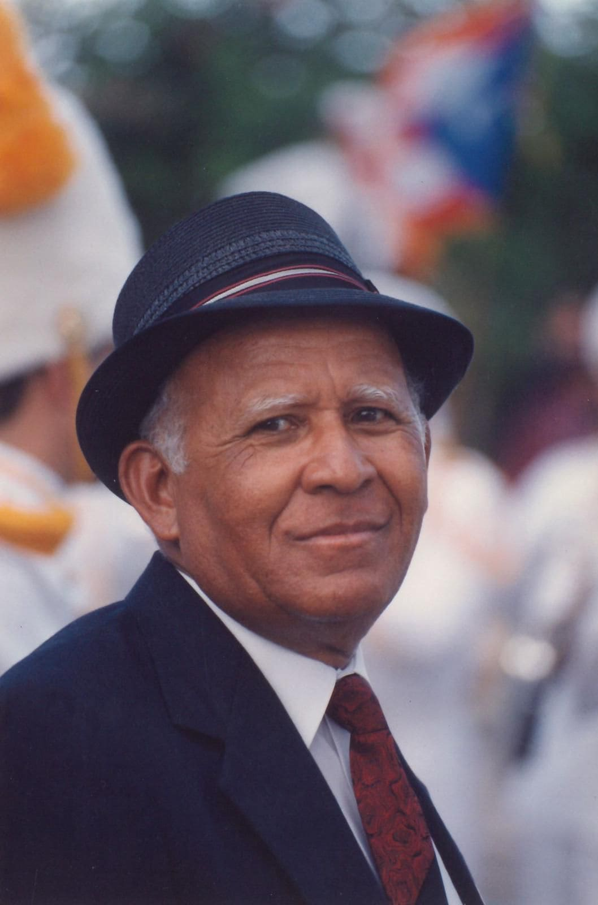

Dans les années 1920, Juanita souffrait d'une grave maladie gastrique qui la maintenait sous traitement médical pendant 12 ans. Son état s'est tellement aggravé qu'elle ne pouvait même manger. Les médecins l'ont abandonnée et c'est alors que, dans son lit, Juanita a imploré à Dieu et a promis que s'Il la guérissait, elle le servirait et traverserait des champs et des villes annonçant l'évangile de la santé et du salut. Dieu a entendu sa prière; Une vieille dame qui rendait visite aux malades vint chez elle et la pria, laissant Juanita totalement en bonne santé instantanément. À partir de ce moment-là, elle a tenu sa promesse et elle s'est donnée à Dieu en rejoignant l'Église pentecôtiste.


Juanita García Peraza
Juanita García Peraza est née le 24 juin 1897 à Hatillo, Porto Rico. Elle venait d'un milieu social élevé famille de classe. Depuis toute petite, elle a fait preuve de grandes valeurs morales et spirituelles, d'amour pour les pauvre, grande sensibilité à la douleur d’autrui, courage, intégrité et charité.

Elle a commencé à se distinguer dans l'église par son amour, son humilité, sa consécration et sa sainteté. Elle était présidente du groupe de femmes et Dieu l'utilisait dans la prophétie, elle a réprimandé le péché et appelé à l'unité du peuple de Dieu. Les dirigeants de l'église ne pouvaient pas comprendre que l'Esprit de Dieu se manifestait dans elle; ils n'ont pas accepté le grand plan du Seigneur d'unifier son Église. Pour cette raison, Juanita a dû faire face des situations d'immense douleur : elle a été humiliée, car elle était une femme, on lui a demandé de se taire ; mais elle était toujours si humble qu'elle attendait avec confiance celui qui l'avait choisi. Le Saint-Esprit de Dieu lui dit un jour : « Mon serviteur, prête- moi ton corps, car j'ai besoin de toi pour commencer mon œuvre. Celui qui t'entends, entendra ma voix et quiconque qui s'unit à toi s'unira avec moi. ». Affligée de toutes les persécutions qui se sont soulevés contre elle, elle implora à Dieu, et pendant qu'elle priait dans sa chambre, elle vit par révélation une étoile descendre du ciel en mouvement circulaire. Dans son esprit elle se demanda où elle tomberait, mais elle s'écrasa sur son front : c'était la lumière du Saint Esprit confirmant son ministère.
En 1940, avec 11 frères, elle quitta l'Église pentecôtiste et commença à prêcher un triple message d'amour, de liberté et d'unité. Il s'agissait des suivants: Teófilo Vargas Seín (Aarón), Pedro Vargas, Encarnación Seín (Concepción), Luis Barrios, Octavio Velázquez, Blasina Barreto, Juan Catalán, Tomasa Catalán, Justa Corchado, Juana Allende et José “Pepe” Pastoriza. L'Église libre est formée et ils commencent à se réunir à Arecibo, à la fois dans les maisons des frères récemment convertis et dans des temples loués. Juanita García a décidé de tout quitter ses biens matériels pour servir Dieu avec humilité.
En 1947, la Congrégation s'installe dans la capitale, San Juan ; à partir de là, elle commence à se développer et diffuser son message. En plus du grand travail spirituel, elle a réalisé un extraordinaire travail social-communautaire. Elle a prêché de la meilleure façon : avec son exemple. Elle a réussi à transformer sa communauté en un tout organisé. Elle a développé des coopératives et des sociétés qui offraient la possibilité de l'emploi et de grands avantages et une amélioration économique pour les membres de la communauté. Elle a établi une école biblique, connue sous le nom de Conseiller, pour instruire, orienter et guider les enfants dans leur développement. Elle a créé des académies musicales, des ensembles musicaux et a également écrit des hymnes comme les suivants : Marche triomphale, Bienvenue, La chandelier, La vision, Le juste, Le cœur pur, La pierre blanche, Si tu as agi comme un croyant, les murs de la ville, entre autres.

Elle a établi un corps de gardes dans le but de donner une surveillance gratuite à toutes les propriétés que la Congrégation acquérait et à la communauté en général. Elle a établi un corps de prédicateurs, hommes et femmes prédicateurs, diacres et diaconesses qui font le bien, prêchent, prient pour les malades et accomplissent des travaux extraordinaires partout où La congrégation Mita s'en va.
En tant que visionnaire, elle aspirait et prophétisait la création d'une égide pour le soin des personnes
âgées et d'une école pour enfants et adolescents de la communauté, qui après son décès est devenue réalité.
Elle a fait un super travail missionnaire visitant les malades dans leurs maisons et leurs hôpitaux, priant
pour eux, offrant de l'aide à ceux dans le besoin et faisant le bien à pleines mains. Elle a visité les
prisons avec des paroles d'encouragement, de consolation, et l'amour. Son travail d'évangélisation était
incroyable. Il y avait toujours des exhortations et des conseils sur ses lèvres à travers sa sage parole,
l'avertissement sur le temps, mais en même temps la patience et la tempérance qui l’ont toujours
caractérisé.
Ainsi, il fallait s'attendre à ce que son travail ministériel influence grandement la domaine social et
l'amélioration personnelle de nombreux êtres humains et de familles entières à travers Porto Rico. De
nombreux
alcooliques, toxicomanes et dépressifs ont été secourus et sont aujourd'hui des hommes et des femmes utiles,
citoyens responsables et intègres. Sa profonde prédication d'un grand contenu spirituel a atteint le but
divin
de transformer tous ceux qui ont entendu et accepté le message.
Son influence était telle qu'il traversa les frontières de Porto Rico vers des terres étrangères,
établissant
le Congrégation aux États-Unis (Washington DC, Chicago et New York) et en République dominicaine
(Saint-Domingue et Santiago de los Caballeros).
Nous soulignons que Juanita García Peraza a donné à la femme la possibilité de s'exprimer pleinement en
permettant sa large participation à l'Église. Elle a marqué le début d'une nouvelle ère pour les femmes à Porto Rico et dans le
monde. À une époque où elle n'était pas autorisée à officier dans l'Église, Juanita brise les barrières et
ouvre la voie à la diffusion du pastorat féminin, confirmant les paroles du prophète Isaïe 27,11 :
«Quand ses branches se dessècheront, elles seront brisées et des femmes viendront les éclairer»
.Tout comme Débora s'est levée comme mère spirituelle en Israël, Juanita García Peraza s'est levée
comme mère pour rassembler un peuple pour le salut.
Après avoir accompli un travail extraordinaire pendant 30 ans, le 21 février 1970, elle est appelée par Dieu
à
repos éternel. Le travail de ses mains prévaut dans le cœur de son peuple, comme un témoignage fidèle de son
lutte inlassable et son amour inconditionnel. Avant la fin de son ministère, elle, devant un groupe de
témoins, appela Aaron et lui dit: «Prends soin de mes enfants et je te payerai», lui donnant son
oeuvre pour continuer son héritage. Pour l'année 1978, elle a obtenu le diplôme de doctorat en Philosophie
en
administration honoris causae.
Elle a marqué le début d'une nouvelle ère pour les femmes à Porto Rico et dans le
monde. À une époque où elle n'était pas autorisée à officier dans l'Église, Juanita brise les barrières et
ouvre la voie à la diffusion du pastorat féminin, confirmant les paroles du prophète Isaïe 27,11 :
«Quand ses branches se dessècheront, elles seront brisées et des femmes viendront les éclairer»
.Tout comme Débora s'est levée comme mère spirituelle en Israël, Juanita García Peraza s'est levée
comme mère pour rassembler un peuple pour le salut.
Après avoir accompli un travail extraordinaire pendant 30 ans, le 21 février 1970, elle est appelée par Dieu
à
repos éternel. Le travail de ses mains prévaut dans le cœur de son peuple, comme un témoignage fidèle de son
lutte inlassable et son amour inconditionnel. Avant la fin de son ministère, elle, devant un groupe de
témoins, appela Aaron et lui dit: «Prends soin de mes enfants et je te payerai», lui donnant son
oeuvre pour continuer son héritage. Pour l'année 1978, elle a obtenu le diplôme de doctorat en Philosophie
en
administration honoris causae.
Touchez les images principales pour voir les autres biographies.
Teófilo Vargas Seín
Teófilo Vargas Seín (mieux connu sous son nom spirituel Aarón) est né à l'aube du 23 Octobre 1921, dans une humble petite maison du quartier Aibonito de Hatillo, Porto Rico. Ses parents, il s'agissait de Pedro Vargas et Encarnación « Concepción » Seín. Face à une grossesse difficile, Concepción a imploré à Dieu et lui a demandé de lui permettre d'avoir un bon accouchement et lui a promis que si son enfant naissait en bonne santé, elle lui donnerais entièrement au service de Dieu.  Sa demande a été accordée et le garçon a été nommé Teófilo, ce qui signifie « bien-aimé de Dieu ». Teófilo a grandi sous la grâce divine avec la bonne direction de parents zélés pour le bien, dans un foyer humble, plein d'honneur, de christianisme et de grandes valeurs spirituelles. Il était un fils discipliné, travailleur et aidant de ses parents. Il a fréquenté une église pentecôtiste avec eux et il participait avec enthousiasme aux études bibliques et interprétait les textes avec vertu spirituelle. Comme il aspirait inlassablement à apprendre, il recherchait les personnes âgées de l'Église pour acquérir d'eux une plus grande sagesse. Quand il avait 10 ans, la famille a déménagé à Arecibo, où il voulait encore plus de dons spirituels et il étudiait la Bible. Un jour, alors qu'il se promenait dans la ville d'Arecibo, il a vu Juanita García Peraza. Il reconnu qu’il s’agissait d’une dame spéciale et pleine de Dieu, même sans la connaître personnellement. L'étonnement était tel qu’il n’a jamais su oublier son visage. Dieu a fait en sorte que ses parents viennent dans la même église pentecôtiste qu'elle fréquentait Quand il la vit, il la reconnut, mais quel fut son étonnement que cette nuit-là elle a prêché devant l’église. L'âme de cet enfant a vibré, et pendant ce moment il a pu comprendre que Dieu parlait à travers de sa bouche. Il ressentait une alliance inexplicable avec elle et la suivait partout.
En 1936, quand Teófilo avait 15 ans, il est venu à la maison de la sœur Juanita et il la retrouvé agenouillée en prière. Voyant cela, il s'agenouilla dans l'autre coin de la pièce pour ne pas l'interrompre, jusqu'à ce que ce tout à coup le Saint-Esprit l'a emmenée et cherché de l'huile d'olive (liquide que le esprit Saint a toujours utilisé pour l'onction de ses instruments choisis) et l'a versé sur sa tête lui disant : « Je t'oins pour être ministre du Royaume ». À partir de ce moment il s’est consacré à la prédication de la parole de Dieu.

Teófilo faisait partie du groupe de 11 frères qui en 1940 ont quitté l'Église pentecôtiste avec Juanita
García
Peraza. À partir de ce moment, il a été lancé à travers les champs et les villes de Porto Rico annonçant que
le Saint-Esprit rassemblait un peuple pour le salut et parlait par les lèvres d'une dame d’Arecibo. En plus
d'être le premier prédicateur, il fut aussi le premier gardien, le premier administrateur, premier
bâtisseur,
fermier et percussionniste de l’ensemble à vents. Il s'est démarqué dans Congrégation pour sa sainteté, son
altruisme et son engagement dans l'Œuvre de Mita.
En 1957, il gère et dirige toutes les démarches pour l'incorporation de la Congrégation devant l’Association
Libre de Porto Rico. Il a été nommé vice-président du conseil d'administration. Dieu a semé en lui toutes
les
qualités qu'un prophète doit posséder : sainteté, intégrité, fermeté de caractère,
 la volonté de se sacrifier, le courage d'affronter les problèmes, la sagesse et le discernement divin, la
tempérance, la bienveillance, la bonté, la charité et surtout un immense amour des âmes.
Pour avoir été choisi dès avant sa naissance, et oint pour être ministre du Royaume, quand le Seigneur
envisagea de reposer le corps de Juanita García Peraza, il confia son peuple à Aarón en disant «Prends
soin de mes fils que je te paierai». C'est ainsi qu'en 1970, Aarón assume courageusement la
direction de la Congrégation de Mita.
Sous sa direction, la croissance écrasante de l'Oeuvre de Mita a commencé, s'étendant beaucoup plus dans la
République dominicaine et les États-Unis, et s'installant en Colombie, au Mexique, au Venezuela, au Costa
Rica, Panama, El Salvador, Canada, Equateur, Espagne et Suisse.
Il a consacré toute sa vie à la prédication évangélique, aidant les personnes dans le besoin et visitant les
hôpitaux priant librement les malades, qu'ils soient ou non membres de la Congrégation. Dans tous les pays
où
l'Œuvre de Mita est arrivée, il a créé des groupes musicaux, un corps gardes et construit des temples. Il se
rendait toujours dans ces pays pour apporter la parole encourageante et le triple message d'amour, de
liberté
et d'unité.
la volonté de se sacrifier, le courage d'affronter les problèmes, la sagesse et le discernement divin, la
tempérance, la bienveillance, la bonté, la charité et surtout un immense amour des âmes.
Pour avoir été choisi dès avant sa naissance, et oint pour être ministre du Royaume, quand le Seigneur
envisagea de reposer le corps de Juanita García Peraza, il confia son peuple à Aarón en disant «Prends
soin de mes fils que je te paierai». C'est ainsi qu'en 1970, Aarón assume courageusement la
direction de la Congrégation de Mita.
Sous sa direction, la croissance écrasante de l'Oeuvre de Mita a commencé, s'étendant beaucoup plus dans la
République dominicaine et les États-Unis, et s'installant en Colombie, au Mexique, au Venezuela, au Costa
Rica, Panama, El Salvador, Canada, Equateur, Espagne et Suisse.
Il a consacré toute sa vie à la prédication évangélique, aidant les personnes dans le besoin et visitant les
hôpitaux priant librement les malades, qu'ils soient ou non membres de la Congrégation. Dans tous les pays
où
l'Œuvre de Mita est arrivée, il a créé des groupes musicaux, un corps gardes et construit des temples. Il se
rendait toujours dans ces pays pour apporter la parole encourageante et le triple message d'amour, de
liberté
et d'unité.
Il a créé le Collège Congregación Mita, l'Institution Egida et El Paraíso, la Bureau de Orientation et travail social et parc commémoratif Los Hermanos. Il a inspiré toute la Congrégation par son exemple et son travail. En 2003, lors de l’inauguration de nouveau temple de la congrégation de Saint-Domingue, l'ancien gouverneur de Porto Rico, l'hon. Raphaël Hernández Colón s'exprimait ainsi à propos d'Aarón : « Cet homme mène et va au front, et ce qu'il prêche, il le pratique".

Il a favorisé le développement des Beaux-Arts avec la création d'académies de musique et de ensembles autour du monde. Sous sa direction, le groupe de harpes et l'orchestre de violons. Parmi ses nombreuses compositions, les suivantes se démarquent : Ma rencontre avec mita, Mita est la véritable aurore, que j'aime ta loi ! Nous te rendons grâce, appelant avec amour, les cieux raconte ta gloire, entre autres. Après presque 85 ans de ministère et 51 ans à la tête de l'œuvre de Mita, le 18 janvier de 2021, il a été appelé par Dieu au repos éternel. Depuis 2012, il avait nommé Rosinín comme mère spirituelle et responsable de la Congrégation.
Touchez les images principales pour voir les autres biographies.
Rosinín Rodríguez Pérez
Rosinín Rodríguez Pérez est née à Guayama, Porto Rico, le 18 octobre 1937. Sa mère était Isabel Pérez Vázquez
et son père Heriberto Rodríguez Fonseca. À l'âge de quatre ans, elle est allée vivre à San Sébastien. Elle a
grandi dans une maison remplie de grandes valeurs spirituelles et morales. Lorsqu’elle était enfant, elle
s'est démarquée pour son amour, son intelligence, sa gentillesse, sa douceur et sa grande sensibilité envers
les choses spirituelles.
 Elle levait les yeux vers le ciel et demanda à Jésus qu'il voulait marcher avec lui, qu'elle voulait voir son
visage et être avec lui comme ceux qui l’ont faut dans l’ancien temps.
Quand elle était très jeune, elle est tombée gravement malade et sa mère a imploré à Dieu d'envoyer un ange
pour la guérir. Soudainement, Isabel eut la vision d'un enfant ange, qui marchait pieds nus, atterrit sur le
petit lit de Rosinin et la priait. Immédiatement, la fille a été complètement guérie. Isabelle a toujours dit
que le saint visage de cet ange était gravé dans son esprit et s'il le revoyait un jour, elle reconnaîtrait.
En 1955, elle rentre à l'Université de Porto Rico, Campus Mayagüez, dans le programme de pré-ingénierie, où
elle a étudié pendant un an. En 1956, elle passa au Campus Río Piedras du Université de Porto Rico, Faculté
des sciences sociales. En 1959, elle obtient son baccalauréat en Sciences sociales avec concentration en
psychologie et sociologie. Elle a ensuite complété 18 crédits au niveau Maîtrise en counseling et 20 crédits
en éducation de l'Université de Porto Rico.
Elle levait les yeux vers le ciel et demanda à Jésus qu'il voulait marcher avec lui, qu'elle voulait voir son
visage et être avec lui comme ceux qui l’ont faut dans l’ancien temps.
Quand elle était très jeune, elle est tombée gravement malade et sa mère a imploré à Dieu d'envoyer un ange
pour la guérir. Soudainement, Isabel eut la vision d'un enfant ange, qui marchait pieds nus, atterrit sur le
petit lit de Rosinin et la priait. Immédiatement, la fille a été complètement guérie. Isabelle a toujours dit
que le saint visage de cet ange était gravé dans son esprit et s'il le revoyait un jour, elle reconnaîtrait.
En 1955, elle rentre à l'Université de Porto Rico, Campus Mayagüez, dans le programme de pré-ingénierie, où
elle a étudié pendant un an. En 1956, elle passa au Campus Río Piedras du Université de Porto Rico, Faculté
des sciences sociales. En 1959, elle obtient son baccalauréat en Sciences sociales avec concentration en
psychologie et sociologie. Elle a ensuite complété 18 crédits au niveau Maîtrise en counseling et 20 crédits
en éducation de l'Université de Porto Rico.
Sa première expérience de travail a été à la bibliothèque José M. Lázaro de l'Université du port Rico, Río Piedras Campus, en tant qu'assistant bibliothécaire. Sa deuxième expérience de travail était à l'école intermédiaire J. R. Dávila de Bayamón, où elle a travaillé comme professeure d'espagnol et professeure des études sociales. En 1960, elle était enseignante visiteuse dans les camps du Département de Éducation. En 1961, elle a travaillé en réadaptation professionnelle en tant que conseillère, où elle avait la chance pour aider divers frères de la Congrégation à terminer leur parcours vocationnel. Puis elle est allée travailler dans la section de détermination de l'invalidité de la sécurité sociale en tant que conseillère.

En 1962, elle a travaillé au centre des opportunités pour les jeunes dans le Département de l'Éducation. De
juin 1965 à mars 1971, elle a travaillé comme conseillère professionnelle au Département du Travail.
L'année 1962 fut transcendante dans sa vie, car elle rencontra Mita et rejoignit la Congrégation. Son âme a
été éblouie par la beauté spirituelle de cette Œuvre ; c’était ce qu’elle aspirait quand elle était enfant,
marcher avec Jésus comme ceux qui l’ont fait dans l’ancien temps. Chaque dimanche, elle visitait la maison
pastorale de la Congrégation pour passer du temps avec la personne de Mita et les frères. elle apprenait les
lois spirituelles et comment un chrétien devrait être. Tous ces enseignements divins résonnaient dans son
intérieur et ils la transformaient. En 1966, elle fut appelée par Dieu à vivre dans la maison pastorale de la
Congrégation de Mita. Dès ce moment, elle sentit que Dieu la préparait pour l’avenir, car elle vit que Mita
lui enseignait avec insistance la loi et qu'elle devait traiter Aaron avec amour et considération.
À une occasion, la personne de Mita a voulu rendre visite à la mère de Rosinín. Quand Elizabeth a vu Aaron
-qui l’accompagnait- fut stupéfait et s'exclama :« Rosinín, c'est l'ange qui t'a guéri quand tu étais
une petite fille. C'est l'ange ! Je savais que je le reconnaîtrait.".
En 1970, après le décès de Juanita García Peraza, elle continuait fidèlement aux côtés d'Aarón collaborant à
tous les projets de la Congrégation.
 Elle a accompagné Aarón dans tous ses voyages ministériels en vue de l'expansion et de l'internationalisation
de l’Oeuvre. Partout où elle allait, elle recevait l'amour de tant de milliers de frères qui voyaient en elle
un être plein de bonté et de tendresse.
Elle a toujours été au bras d'Aarón dans les multiples projets architecturaux et dans ledéveloppement de
l'Oeuvre de Mita, étant toujours sa personne de grande confiance. Elle était au courant de toutes les
constructions, remodelages, agrandissements et extensions de temples dans tous les pays. Elle a assuré la
planification et l'organisation de tous les aspects de la Congrégation de Mita. À maintes reprises, Aaron a
exprimé son appréciation pour ses efforts, ses soins et son dévouement pour le bien de cette Oeuvre de Mita.
Elle s'est démarquée par ses grandes valeurs morales et spirituelles, par sa consécration, son dévouement et
engagement envers la Congrégation et envers tous les paroissiens.
Elle a été:
Elle a accompagné Aarón dans tous ses voyages ministériels en vue de l'expansion et de l'internationalisation
de l’Oeuvre. Partout où elle allait, elle recevait l'amour de tant de milliers de frères qui voyaient en elle
un être plein de bonté et de tendresse.
Elle a toujours été au bras d'Aarón dans les multiples projets architecturaux et dans ledéveloppement de
l'Oeuvre de Mita, étant toujours sa personne de grande confiance. Elle était au courant de toutes les
constructions, remodelages, agrandissements et extensions de temples dans tous les pays. Elle a assuré la
planification et l'organisation de tous les aspects de la Congrégation de Mita. À maintes reprises, Aaron a
exprimé son appréciation pour ses efforts, ses soins et son dévouement pour le bien de cette Oeuvre de Mita.
Elle s'est démarquée par ses grandes valeurs morales et spirituelles, par sa consécration, son dévouement et
engagement envers la Congrégation et envers tous les paroissiens.
Elle a été:
- Membre de la Maison Pastorale de la Congrégation Mita.
- Membre fondateur et première administrateur du Colegio Congregación Mita.
- Membre fondateur de l'Institution Egida et El Paraíso.
- Membre fondateur du Bureau d'aide sociale et d'orientation et première administrateur.
- Marraine de l’ensemble à vents Mita.
- Membre fondateur du parc commémoratif Los Hermanos.
- Membre fondateur du Centre de santé médicale Dr. Luis Daniel Silva.
- Présidente du conseil d'administration de Los Hermanos Corporation.

Depuis 2012, elle a été désignée par le Saint-Esprit à travers Aaron comme la mère spirituelle du peuple de Mita et la personne qui devait lui succéder à la direction de la Congrégation. Sous son ministère et sa direction, l'Œuvre de Mita s'est étendue aux pays du Chili, du Nicaragua et L'Italie, poursuivant l'héritage d'expansion laissé par Aarón. Sa composition artistique est fructueuse. Elle a composé des hymnes qui se démarquent: Saint amour, Amour brûlant, Vie, Tu es ma raison, Foi, amour et paix, Ne m’oublie pas, rêve, entre autres. Depuis l'année 2021, quand Aarón est appelé par Dieu au repos, Rosinín a assumé la direction de La Congrégation Mita et est l'instrument à travers lequel nous entendons la voix de Dieu.
Touchez les images principales pour voir les autres biographies.